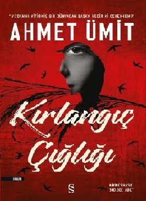
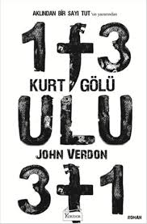
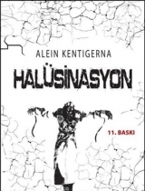

www.kitaphakkında.com.tr
Kitaplar hakkında bir çok şey bizde ❤
Polisiye Kitap
Kırlangıç Çığlığı Kitabı
|  |
| Kitabın Yazarı:Ahmet Ümit |
| Kitap Türü:Yerli Romanlar |
| Yayınevi:Everest Yayınları |
| Yayınlandığı Yıl:2018 (04-04-2018) |
| Sayfa Sayısı:400 |
| Kitap Puanı:8.9/10 |
|
|
Arka Kapak Bilgisi
Acıyı gördüm. Gözlerinin ortasında bir çiçek gibi büyüyen irisin önce ağır ağır büzülmesini, ardından çığlık gibi ansızın patlamasını gördüm. Titreyen dudaklar, bal mumuna dönüşen yüzleri, çöken yanakları, irileşen elmacık kemiklerini, birer mağara gibi derinleşen göz çukurlarını, kurumuş ağızların içinde pelteleşen dilleri gördüm.
Anladım ki benliğimizin farkına vardığımız an, acının pençesinde kıvrandığımız andır.
Çığlık değil, ürperiş değil, evet, nereden geldiğini bilmediğim o vahşi iniltiyi kalbimin derinliklerinde duydum. Soluksuz kaldım, boğazım kupkuru, alnım ateşler içinde, tuhaf bir hülyaya kapılmışım gibi sürüklendim o dipsiz boşlukta. Hayatın en karanlık sırrıyla yüzleştim.
Karanlığın her aşamasından geçtim, akan kanın sesini duydum, ölümün serinliğini damarlarımda hissettim.
Geçmişin kamburunu çoktan söküp attım sırtımdan.
İnsanın insanı öldürdüğü o ilk ânı gördüm, katilin zafer haykırışını, kurbanın korku çığlığını işittim.
Her an uyanmaya hazır o muhteşem dürtüyü bastırmak, insanlığın en masum haline, en saf doğasına dönmemek için yıllarca ihanet ettim kendime. Kendimle birlikte bütün dünyayı da kandırdım. Neredeyse başaracaktım ama bırakmadılar, benim adıma onlar öldürmeye başladılar.
İşte bu yüzden geri döndüm...
Kırlangıç Çığlığı Kitabı Özeti
Ahmet Ümit’in son kitabı olan Kırlangıç Çığlığı diğer kitapları gibi oldukça güzel tepkiler topladı. Karakterimiz tabi ki Nevzat Başkomserdi. Beyoğlu’nun En Güzel Abisi kitabından sonra Nevzat Başkomser’i özlemiştik. Tabi ki Evgenia, Komiser Zeynep ve diğer ekip de roman da yine aynen yer alıyor. Kısaca kitap Ahmet Ümit’in tipik polisiye romanlarının serisinden bir tür olarak okuyucu ile buluştu.
Kırlangıç Çığlığı kitabının konusu yıllar öncesinden “Körebe” davası olarak tamamlanamadan açık kalan bir seri katil vakasının yeniden öldürmeye başlaması üzerine kurulmuş. Ahmet Ümit kitabı ile ilgili bir konuşmasında şöyle demiştir; “Çocuk tacizcilerini öldüren bir seri katil mi daha tehlikeli yoksa dünya bu haldeyken ‘aman banane’ deyip kendi keyfine bakan insan mı daha tehlikelidir?”. Kitabı okurken gerçekten bu ikilemi sık sık hissettiğiniz oluyor. Hatta karakterlerin bile bazen bu ikilemde kaldığını görüyoruz. Kitapta “Körebe” adındaki seri katil çocuk tacizcilerini hedef alıyor ve onları hep aynı ritüelde öldürüyor. Yıllar öncesinde bu vaka yaşanmış fakat yakalanamamış. Bir gün Nevzat Başkomiser’in ekibi cinayet mahalline gittiğinde gördüğü manzara karşısında Körebe’nin geri geldiğine karar veriyorlar. Nevzat Başkomiser eşini ve kızını bir saldırıda kaybetmiştir ve kızı da zamanında bir taciz vakasıyla karşı karşıya kalmıştır. Bu nedenle konu oldukça hassas bir hal almaya başlar.
Körebe kurbanlarını hep çocuk tacizcilerinden seçmektedir. Tacizcileri öldürüp çocuklarla ilgili mekanlara götürür ve yanlarına bir oyuncak bırakır. Ayrıca kurbanların gözlerini kadife bir göz bandı ile bağlar hep sağ kulaklarını kesmektedir. Bu nedenle de adı Körebe olarak yer etmiştir. Oldukça net ve ayırt edilebilir bir ritüel olduğu için cinayetler yeniden başladığında herkes Körebe’nin geri döndüğü konusunda hem fikir olmuştur.
Kitap genel olarak işlenen bu cinayetlerin çözüm aşamalarını ve geçmişle olan bağlantılarını izleyerek bir yol haritası çıkarıyor. Olayların tam çözüldüğünü düşündüğünüz noktalarda çok güzel ters köşeler var. Bu nedenle kitabı okurken heyecanınızı hiç kaybetmiyorsunuz. Körebe’nin işlediği cinayetler ve yaptığı ritüelin nedeni kitapta detaylıca anlatılıyor. Okumamış kişilerin şevkini kırmamak adına burada bahsetmek istemem fakat kitapta en etkileyici bulduğum noktalardan birisi olduğumu söylemem gerekir.
Kitabın değindiği diğer sosyal problemlerden biri de Suriyeli mültecilerin sorunları. Gerçekten bizim günlük yaşantımıza devam ederken göz ardı ettiğimiz ve çok da farkında olmadığımız bir sorun aslında. Ahmet Ümit onların hayatlarına biraz ışık tutmuş. Para uğruna çocuklarından, kendilerinden, ailelerinden nasıl vazgeçmek zorunda kaldıklarını ve bu yüzden de başlarına ne kadar talihsiz olaylarından geldiğinden bahsediliyor. Özellikle de çocukların böylesi tehlikeli bir devirde bu şartlar altında hayatta kalmaya çalışmasını böyle bir pencereden görmek beni oldukça etkiledi.
Genel olarak kitapta toplumun belki de görmemek için gözlerini kapattığı, kırlangıç çığlıklarını eğlence zannettikleri hikayelerin acı gerçekleri yansıtılıyor. Bu nedenle bu kitabı sadece bir polisiye roman olarak nitelemek istemem. Toplumsal bir eleştiri olarak da okunması gerektiğini düşünüyorum.
Dil olarak Ahmet Ümit diğer kitaplarında da olduğu gibi son derece akıcı ve yalın bir kullanmış. Okumakta ve olayları takip etmekte bir okuyucu olarak hiç zorluk çekmediğimi belirtmeliyim. Polisiye romanlarında genel olarak hem karakter fazlalıkları hem de hızlı olay akışları nedeniyle bazen okurken kopukluklar yaşanabiliyor. Ama genel olarak Ahmet Ümit kitapları bu kopukluklara pek izin vermiyor. Bu nedenle de benim okurken yine çok keyif aldığım ve tavsiye listeme de eklediğim bir kitap oldu.
Kurt Gölü Kitabı
|  |
| Kitabın Yazarı:John Verdon |
| Kitap Türü:Yabancı Romanlar |
| Yayınevi:Koridor Yayıncılık |
| Yayınlandığı Yıl:2016 (18-10-2016) |
| Sayfa Sayısı:472 |
| Kitap Puanı:9.3/10 |
|
|
Arka Kapak Bilgisi
Gördüğünüz bir kabus, cinayet silahı olarak kullanılabilir mi?
Ülkenin farklı yerlerinde yaşayan dört kişinin tek ortak noktası; aynı rüyayı gördüklerini ve bu rüyada kurt başlı bir hançerle öldürüldüklerini söylemiş olmalarıdır. Dördü de bu ifadelerinden hemen sonra, bilekleri kesilmiş halde bulunur ve yanı başlarında hepsini ölüme götüren kurt başlı bir hançer duruyordur. Onları intihara götüren bu kabuslar mıydı?
Bir anda tüm dikkatler, ürkütücü atmosfere sahip Kurt Gölü diye bilinen yerde, hipnoz terapileri yapan Psikolog Richard Hammond'a yönelir. Her bir kurban ölmeden kısa bir süre önce Hammond ile Kurt Gölü'nde hipnoz terapisi görmüştür.
Kurt Gölü'nün şeytani esrarengizliğinde en az onu tuzağa düşüren kar fırtınası kadar acımasız olan düşmanları, ne pahasına olursa olsun Gurney'i gerçeklerden uzak tutmaya kararlıdırlar. Duygusal açıdan kırılma noktasına gelen Gurney, şimdiye kadarki en korkunç düşmanı ile kendini ölümcül bir oyunun içinde bulur.
Kurt Gölü Kitabı Özeti
Gurney adlı karakterin polis teşkilatından emekli olduktan sonra kendisine gelen ilginç bir takım intihar vakalarının araştırıldığı bir polisiye roman Kurt Gölü. Sorun şu ki her şey apaçık ortada bir terapisti işaret ediyor. İntihar vakalarının dördünde de bir psikolojik terapiden sonra intihar ettikleri rahiplere itirafları, işaretler, ipuçları ve önceki anlatılarıyla apaçık ortada. Esrarengiz bir ortak nokta ise dördünün de aynı rüyayı görmeleri… Kurt başlı hançer ve bir göl… Acaba gerçek bu kadar açıkken insan zihni yanılabilir mi? Yoksa John Verdon sizleri bir göl kenarına götürüp bir rüya görmenizi mi istiyor? John Verdon şüphesiz gerilim ve polisiyenin son yıllarda ki en büyük eserlerine imzasını atmış bir isim. Ve sizi Kurt Gölü’ne, çok uzaklara ve bir o kadar yakınınıza ölümcül bir rüyanın içine çağırıyor.
Gurney bir evde bir kirpiyi gözlemlerken başlıyor, roman. Terapistin kardeşi Jane, Richard Hammond’un bu olaylarla ilgisinin olmadığı açıklaması için Gurney’i gelip ikna etmeye çalışıyor. Jane kardeşinin akademik hayattaki ikiyüzlülükler ve çıkar çatışmalarından dolayı gözlerin üzerinde olduğunu anlatıyor. Büyük empati yeteneği ve bilgisiyle Richard Hammond(Terapist) bu olaylardan aklanması gerektiğini ve Gurney’e güvendiğini söylüyor. Ama bu işte bazı tuhaflıklar vardır. Richard Hammond hiç avukat tutmamaktadır. Onun ablası ise bir dedektif kiralamak ve onu aklamak için çalışmaktadır. Küçük kardeşinin arkasını kollamaya çalışan Jane acaba neyin peşindedir?
Richard Hammond’u daha iyi tanımak istersek kitaptaki bir hikayeyi dinleyelim. Bir adam arabasını satmak istemektedir. Arabanın bagajında bir ölü olduğunu düşünür. Bir garaja satsa garajdaki insanların onun öldürdüğünü düşünmelerinden korkar ve satmaz. Yıllar sonra arabanın bagajı bir kazada tesadüf eseri açılır. Bagaj boştur. Kitaba göre bu adam Richard Hammond’un kendisidir. Terapist bir kaçık mıdır? Yoksa düpedüz takıntıları olan bir deli mi? John Verdon şüphesiz aktarılamayacak güzellikte bir dil işçiliğine sahip bu eserinde her sayfada okuru şaşırtmayı biliyor.
Gurney internetteki yazılar ve polislerin açıklamalarını toplayıp görgü tanıklarını dinlemektedir. Richard Hammond hakkında emniyet her zamanki ketum sızdırmazlığını korurken; bazı polislerin Richard Hammond’a karşı sınır tanımaz saldırganlığı usta dedektifin gözünden kaçmamaktadır. Bazı iddialara göre Richard Hammond homoseksüelliği yayan bir kaçığın tekidir. Gurney bunları araştırdığında Hammond’un geçmişinde ilk yıllarında bu tür çalışmalarla kendi kimlikleriyle bireylerin yüzleşmesini sağladığını öğrenmiştir. Bundan dolayı bir takım rahip grubunun mail saldırısına maruz kalmıştır.
Gurney’in içerisinde olmadığı bambaşka bir Dünya, hipnoterapi! Acaba hipnoz altında bireylerin hareketleri yönlendirilebilir mi? John Verdon kitabındaki karakterlerle cevap veriyor: Hayır! İnsan davranışı kendine has davranışlar sergilese de özünde olmayan davranışları yapamaz. Oysaki Richard Hammond yazdığı makalesinde bu soruya farklı bir yanıt veriyor: İnsan hipnoz altındayken yeni davranışlar sergileyebilir.
Bir tarafta emniyet, doktorlar ve rahipler tarafından hedef tahtasına konmuş Hammond var. Diğer tarafta Gurney dedektiflik günlerinin en zor davasıyla karşı karşıya kendisini bulmaktadır. Bir yandan da Peyton abisinin mirasına konmak için günler saymaktadır. Peyton bu rüyaların gizemiyle büyülenmiş bir kitle karşısında Polis Feyton’un dikkatini çekmemektedir. Ne de olsa bütün dikkatler hipnoz seansından öldükleri için aynı isme yönelmiştir, Richard Hammond! Hammond masum mudur? Yoksa bilimin sınırlarını zorlayan iz bırakmayan usta bir katil mi?
Kurtların, rüyaların ve cinayetlerin sır perdesini aralayan Gurney, Kurt Gölü adlı kitapta heyecanın bir an bile düşmediği bir kurguyla sizi bekliyor. John Verdon’un bir karakteri olan Gurney Gall Doğa Koruma Alanı Kurt Gölü Tesisi yolunda ilerlerken birini gördüğünü sanar. Oysa geri geldiğinde gördüğü şeyin bir ağacın gölgesi olduğunu fark eder. Gurney gerçekleri görebilecek midir? Yoksa kusursuz intiharların bir rüyadan sonra gerçekleşmesi tesadüf müdür? Son söz John Verdon’dan:
‘’Korku karanlıkta büyür. Kapıyı biraz aralık bırak yeter. Bırak kapının ardında başka neler olabileceğini o düşünüp, endişelensin.’
Halüsinasyon Kitabı
|  |
| Kitabın Yazarı:Alein Kentigerna |
| Kitap Türü:Yabancı Romanlar |
| Yayınevi:Panama Yayıncılık |
| Yayınlandığı Yıl:2013 |
| Sayfa Sayısı:420 |
| Kitap Puanı:9.4/10 |
|
|
Arka Kapak Bilgisi
Doğradığı her kurbanın üzerine başka bir kadının ismini dağlayan bir sapık... Katilin saplantı haline getirdiği 118 rakamının gizemi...
Polisle, kedinin fareyle oynadığı gibi oynayan kan içici bir avcı. Onun peşine düşen, kendi ruhsal sıkıntıları içinde boğulup kalmış kırk dört yaşında bir profil uzmanı.
Aklın sınırlarını zorlayan bir hayal gücü, kalbin temposunu bozacak bir gerilim ve hemen yanı başınızda soluğunu hissedeceğiniz güçlü karakterler. Elinizdeki kitap pimi çekilip beyninizin labirentlerine bırakılmış bir bomba etkisi yaratacak!
Soluğunuzu kesecek, zihninizi allak bullak edecek, sarsıcı, gerçekçi bir psikolojik-gerilim kurgu.
Bildiğiniz her şeyi unutun ve aklın sınırlarını zorlayacak bu gizemli hikâyenin kapılarından geçin; kitabı bitirdiğinizde hayat çok farklı olacak.
Çünkü zihninizde açtığı tahribatı kolay kolay tamir edemeyeceksiniz!
Hiç düşmeyen bir tempo!
Tedirgin edici bir gerilim!
Baş döndürücü ve karmaşık bir gizem!
Tahmin edilmesi imkânsız bir son!
Halüsinasyon Kitabı Özeti
Kitapların arkasında ki şu övgüler genellikle boş çıkar. Kapağı doldurmak için konmuştur bazen ve o övgülerin çoğu kitap hakkında gerçek değildir. Tüm samimiyetimle söylüyorum ki Halüsinasyon kitabı hem sahip olduğu övgüleri hem de daha fazlasını hak ediyor.
Olay bir seri katil olan Damgacı ve onu yakalamaya çalışan FBI özel ajanları arasında geçiyor. FBI’ın profil uzmanı Mike ve meslektaşı aynı zamanda yakın dostu John ile bu dava ikisine verilmişti.
Damgacının öldürdüğü tüm kurbanları fahişeydi. Hepsinin vücudunu parçalara ayırıp farklı olay yerlerine bırakıyordu. Arkasında bir iz olmadan… Bu konuda FBI sıkıntıya düşmüştü çünkü ellerinde ne bir parmak izi ne bir DNA örneği vardı. Sadece kurbanlarını damgaladığını ve 118 rakamıyla alakalı bir derdi olduğuydu.
Çünkü tüm kurbanlarına 118 rakamı dağlıyordu.
Katil çok daha önceden de cinayetler işlemişti ama hiçbirinin cesedi ortaya çıkmamıştı. Bu son cinayetleri ortaya çıktığında ise tarzında bir farklılık vardı. Artık kurbanlarının bedenine ajan Mike için önemli kadınların ismini kazıyordu. Ve kazıdığı tüm kadınlar ölmüştü. Kristen adlı sevgilisi hariç.
Bölüm amiri Clarkson’da dâhil herkesin gözü Mike’ın üzerine çevrilmişti. Katil Mike’ın en karanlık sırlarını biliyor ve bunları gereken kurbanların üzerine işliyor, gerek arayarak dile getiriyor.
Mike’ın zorlu bir geçmişi zaten vardı ve bu tekrardan gün yüzüne çıktıkça, Mike daha da öfkeleniyordu. Damgacı ise FBI ile farenin kediyle oynadığı gibi oynuyordu.
Her şeye rağmen bir zanlı tespit edilmişti. Gary Lockwood. Her ne kadar tek şüpheli o gibi görünse de Mike bile onun suçsuz olduğunu düşünüyordu. Lakin son olaydan sonra bir zanlı daha çıkmıştı. Mike.
Son kurbanın parmak aralarında Mike’ın saç örneği bulunmuştu ve FBI, Mike tutuklamaya giderken Mike kaçmıştı. Bir suçlu gibi…
Suçlu olduğundan değil kaçmasının sebebi; katille randevulaşmasından. Katil Mike’ı ilk sevgilisi Kristen’ın cesedine götürürken, daha sonra da her şeyin başladığı yere Brezilya’ya davet etmişti.
Mike, Damgacının istediğini yerine getirip Brezilya’ya gitmişti. Ama orada başka birisiyle daha karşılaşmıştı. Cinayetlerin diğer zanlısı Gary Lockwood’la. Ve birden uyandığından Gary ile bir mahzende kapalı bulmuşlardı kendisini.
Ama karşısında ki adam sürekli Gary olmadığını tekrarlıyordu. Adının Miguel olduğunu ve Amerika’da sadece bir kez bulunduğunu o da 20 yıl önce olduğunu savunuyordu. Aralarında çekişmeler geçti, ama işler biraz daha değişmişti. Mike, Gary veya Miguel – kim olduğunu bilmediği- şahısla bir mahzende kısılıp kalmışken, ekip arkadaşı John, gerçek katili bulmuştu.
Ve gerçek katil aklınızın bile alamayacağı biriydi. Gerçek anlamda.
Kurgu buraya kadar normal; her gizem, gerilim kitaplarında olduğu gibi… Ama unutmayın Halüsinasyon romanı; şizofren, paranoya, deli hastalarının üzerine kurulmuş bir kitap. Kimin akli dengesinin yerinde olduğunu tahmin edemezsiniz. Nede olsa en tehlikeli deliler akıllı numarası yapanlar.
Günümüzde klasikleşmiş gizem-gerilim-polisiye yazarlarının dışında diğer yeni yetenekli yazarlara da açık kapı bırakmalıyız. Ve bence Alein Kentigerna bu yetenekli ve keşfedilmemiş yazarların başında geliyor.
Polisiye kitaplarında hep bir farkındalık olsun için çabalarlar ama sonuç yine hep aynı olur. Bu kurgu kesinlikle çok farklı… Yani kitabın başında çok sakin ilerliyor diye düşünebiliyorsunuz ama Halüsinasyon kitabını bitirdiğimde deli falan olduğumu düşündüm. Her türlü bitebilirdi ama böyle bir sonu hiçbir zaman tahmin etmemiştim.
Ve size bir tavsiye kitaba yeni başlayıp, meraktan şöyle bir son sayfalara göz gezdiriyorsunuz ya; yapmayın. Ya da en azından 412. Sayfası asla okumayın. Çünkü kitabın başında size dediğim o san sayfayı okuyunca büyük bir hayal kırıklığına uğruyorsunuz. Kitabı bitirdiğinizde büyük bir şoka...